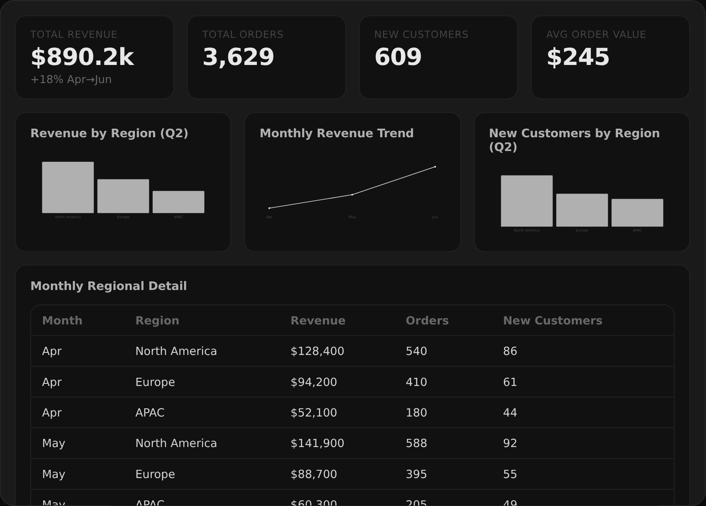
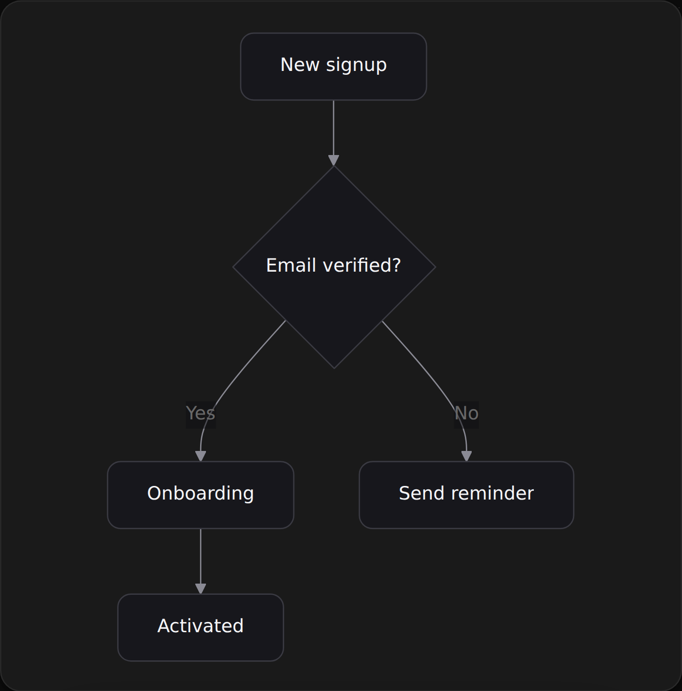
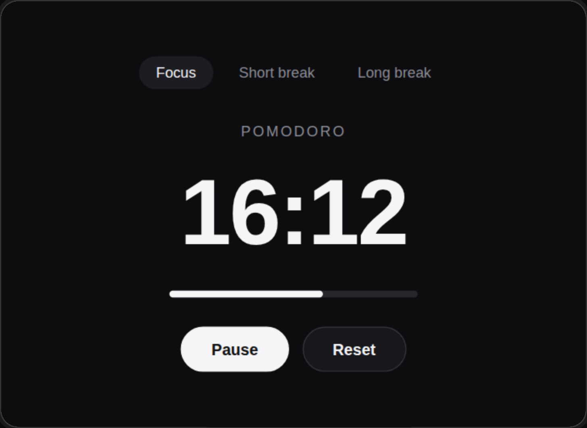
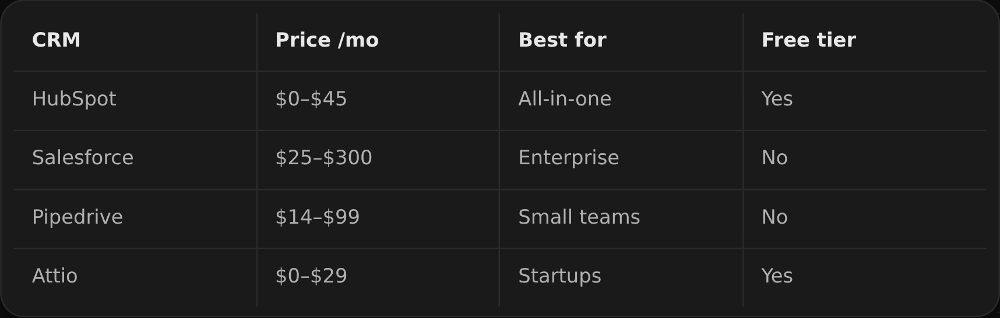
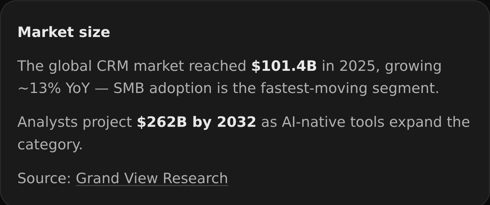
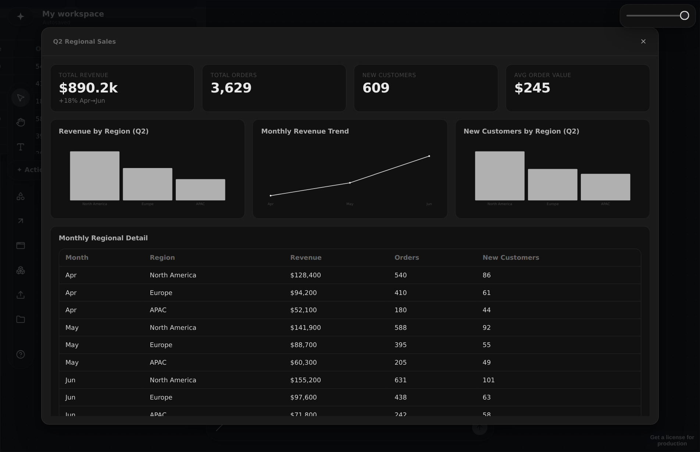

The AI whiteboard that does the thinking.
Describe anything and Jarwiz builds the right artifact for it — a doc, a table, a diagram, a live prototype, a dashboard from your data, or a whole board of cards. Not a chat.

A live preview of the real app. Type below the canvas or tap a suggestion to spawn a card. Open the full app →
The right shape for every answer.
A chatbot hands you one wall of prose to scroll — no matter the question. Jarwiz picks the form the answer wants, and lays it on a canvas you keep.
A chatbot gives you
- One answer, in a wall of text
- The same prose shape for every question
- A single thread you scroll and lose
- A sidebar bolted onto someone else's app
Jarwiz gives you
- A table to compare, a dashboard for data, a board to think in
- The right shape, suggested as you type
- Real frameworks, researched and cited
- A canvas you keep, extend, and hand off
One prompt. The right shape.
Ask for anything and Jarwiz picks the form the answer wants — a doc, a table, a diagram, a live prototype, a dashboard, or a whole board — and suggests it as you type.
Turn a spreadsheet into a live dashboard.
Drop a table and Jarwiz builds KPI tiles, bar and line charts, and a data table — every number computed from your real rows. Filter or refocus it right on the canvas.

Diagram.

Prototype.

Run a real framework.
Table.

Researches & cites.

It suggests the shape as you type.
Not a mockup. Real output.
Actual boards and dashboards Jarwiz laid down from a single prompt. Every card is live and editable.
Drop a spreadsheet. Get a dashboard.
Hand Jarwiz your rows and it builds a live dashboard — KPI tiles, charts, and a data table — then lets you filter and refocus it in place.

Every number computed from your rows. Filter it, refocus it, or ask a follow-up — the whole dashboard updates in place.
A board that argues back.
One prompt — “SWOT Figma” — and this is the board Jarwiz laid down: the 2×2, a TOWS strategy table, and a verdict with priorities.
Real output, not a mockup. Move a card, dig deeper on any of them, or reshape a doc into a table — right on the canvas.
Seven machines that do the thinking.
Drop one on the canvas, type a subject, hit Run. It researches the live web and lays a whole framework of cards onto your board.
SWOT Analysis
Researches strengths, weaknesses, opportunities and threats, then lays out a 2×2 board with TOWS strategy and a verdict.
boardEffort–Impact Matrix
Scores each idea on effort and impact, then drops it into a Quick wins, Big bets, Fill-ins or Time sinks quadrant.
boardCompetitive Analysis
Finds the real competitors and benchmarks the subject on positioning, pricing, strengths and momentum.
tableRisk Assessment
Surfaces the likely failure modes with a read on likelihood and impact, and a concrete mitigation for each.
tablePros & Cons
Researches the decision across the web, then weighs the strongest evidence-backed arguments on each side.
tableUser Persona
Researches the real audience, then drafts a grounded persona with goals, frustrations and what would win them over.
doc5 Whys
Traces a problem down five levels of “why” to a grounded root cause, and the one thing to do about it.
listThree moves from blank to finished.
Drop, ask, or run
Drop in your material, ask a question in the prompt bar, or pull a Thinking Machine off the left rail and type a subject.
Jarwiz picks the shape and builds
It searches the live web, reasons through a real framework, and lays the answer out in the right shape — a doc, table, dashboard, or a whole board of cards.
Refine on the canvas
Move, connect, reshape and deepen the cards. Every artifact stays live, so you can argue with it, extend it, or hand it off.
Bring your ideas to a canvas that thinks back.
Open the app and describe something you actually care about — Jarwiz will build the right shape for it. It is open source, too — clone it and add your own key.
Runs in your browser. No sign-up, no install.